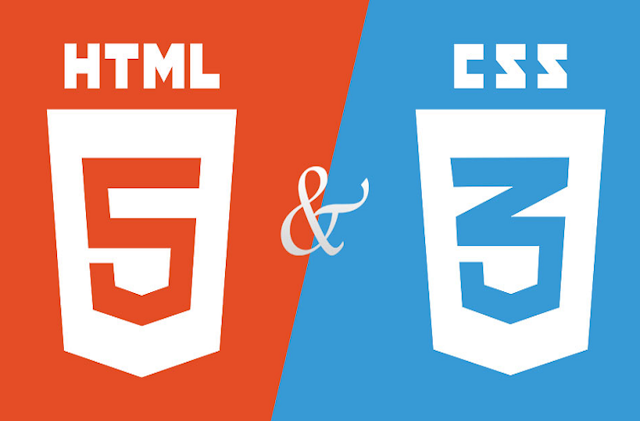
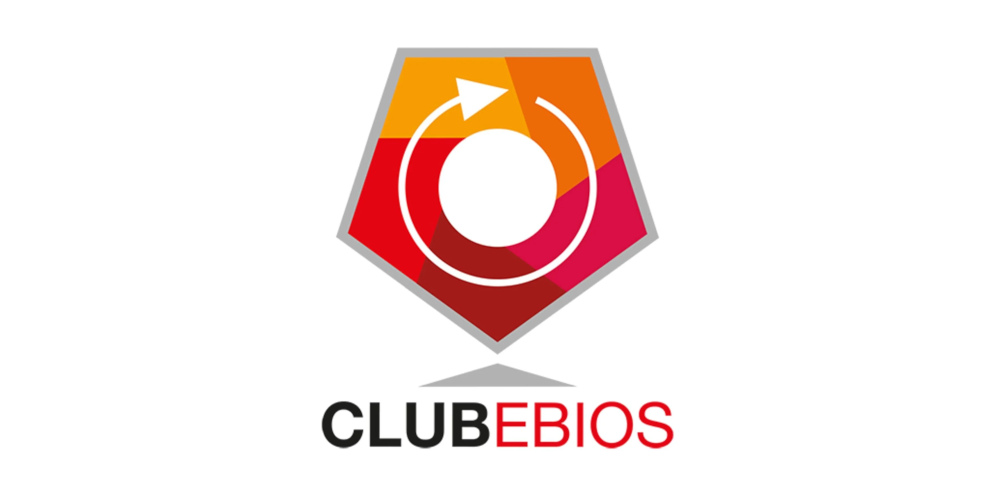
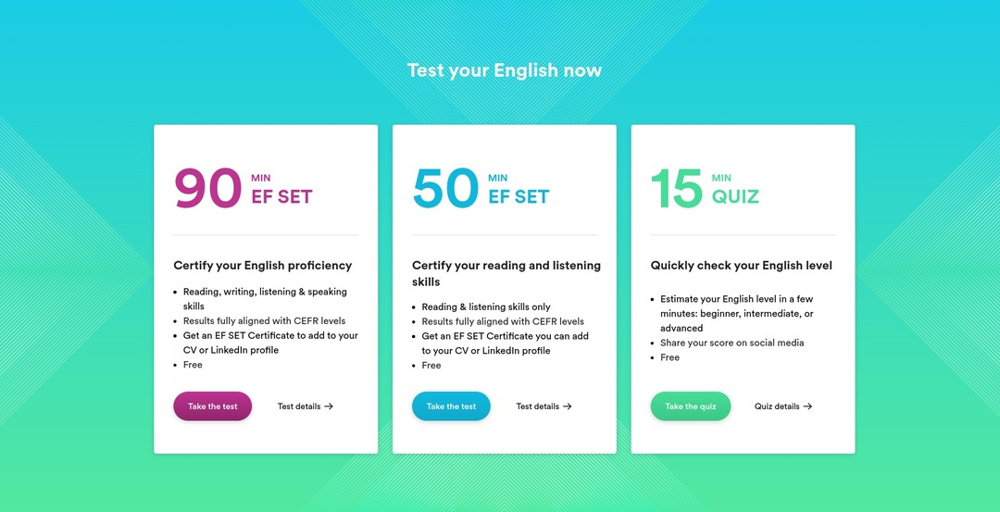

Les bases du language Python
Utilisation de structures logiques essentielles et automatisation de la collecte de données web grâce aux bibliothèques Requests, Beautiful Soup et CSV. Compétences pratiques en manipulation de données et en extraction d’informations en ligne.
Les bases du matériel informatique
Ce cours enseigne les bases des ordinateurs et des terminaux mobiles en couvrant les concepts de base et les compétences nécessaires pour installer les composants nécessaires à la création, à la réparation ou à la mise à niveau les ordinateurs personnels.
MOOC ANSSI
Initiation à la cybersécurité, approfondissement des connaissances, pour ainsi agir efficacement sur la protection des outils numériques
HTML/CSS

Initiation à la programmation avec des langages accessibles, faciles à apprendre, et incontournables du Web : HTML5 et CSS3.
Intro à la méthode EBIOS Risk Manager

Apprentissage de la méthode EBIOS Risk Manager développée par l'ANSSI pour analyser et traiter les risques numériques. Compétences en identification des sources de risque, des scénarios d'attaque et en élaboration de mesures de sécurité adaptées.
Cisco – Introduction à la Cybersécurité
Formation Cisco NetAcademy couvrant les fondamentaux de la cybersécurité : types de menaces, protection des données personnelles, sécurité des réseaux et bonnes pratiques face aux cyberattaques.
Cisco – Network Technician Career Path
Parcours complet Cisco dédié aux techniciens réseaux, couvrant les bases du matériel, les protocoles réseau, la configuration des équipements et le dépannage d'infrastructures LAN/WAN.
EF SET English Test - 50 Min

Certification internationale du niveau d'anglais via le test EF SET (50 minutes).
Évaluation des compétences en compréhension orale et en lecture, avec obtention
d'un certificat personnalisé reconnu à l'international et intégrable directement
sur un profil LinkedIn.